Page 1: The fracture

THE NUCLEAR WAR DID NOT END WITH RUINS.
The Earth itself shattered.

CONTINENTS BECAME ISLANDS IN THE VOID.
Turbulent magnetic waves held the fragments together.
Violent in motion. Predictable in their patterns.

HUMANITY WAS ALMOST WIPED OUT.
Those who survived learned to live
on the pieces of their old world.
Page 2: Adaptation

GENERATIONS PASSED IN THE MAGNETIC FIELDS.
Humanity slowly evolved.
New attributes emerged in a changed world.

NUCLEAR MATERIALS FUSED INTO SOMETHING NEW.
A family of metals unlike anything from the old world.

THEY CALLED IT MAGNETON.
What began as a discovery
became the foundation of civilization.
Page 3: The cities

OPPOSITE POLARITIES. CONSTANT MOTION.
Oppositely polarized Type B cores drove magnetic motors.
The motors powered a new age.

THE ENGINES DID MORE THAN KEEP THE LIGHTS ON.
They stabilized the islands and generated
a field that restored the feel of the old gravity.

CITIES ROSE ABOVE THE BROKEN EARTH.
Magneton kept them afloat.
Every city depended on its supply.
Page 4: The barons

THE FIRST BARONS WERE MINERS.
They extracted Magneton and built ships from it.
Magnetic motors carried them between the islands.

TRADE ROUTES LED TO CITIES. MINING ROUTES LED TO POWER.
Those who controlled the mines and the fleets
became the new ruling class.

THE CITIES GATHERED INTO DUCHIES.
Civilization returned to feudal rule.
Its foundations were no longer land alone, but Magneton.
Page 5: A duke in name
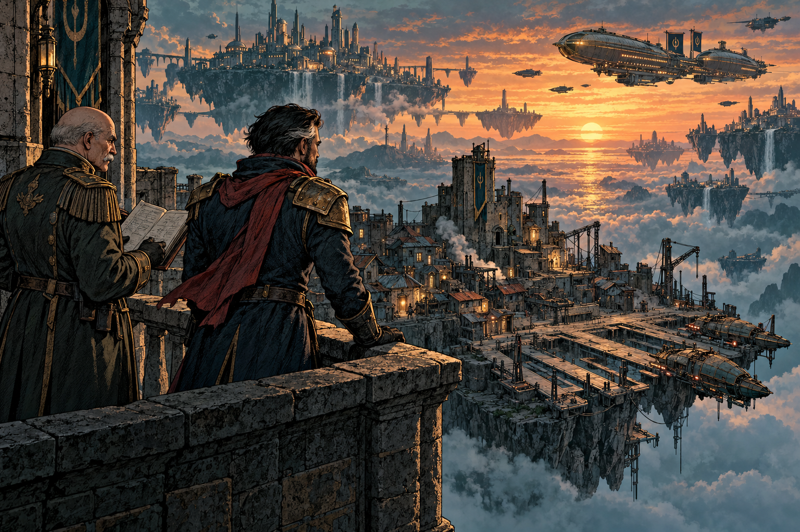
VEYMARCH. A DUKE IN NAME.
Duke Rovan Vey overlooks the small city his fleet can barely afford to protect.
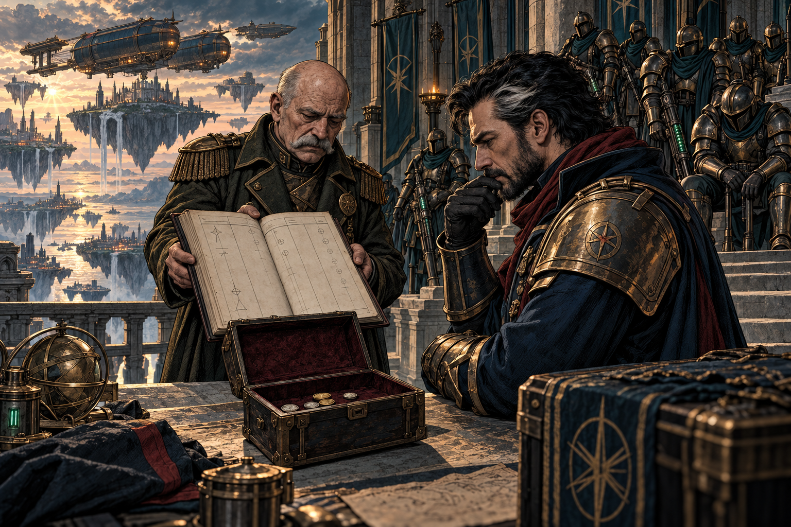
THE COST OF KEEPING THE ROUTES OPEN.
General Grievous: “The soldiers’ pay is overdue. The repair yards are waiting too.”
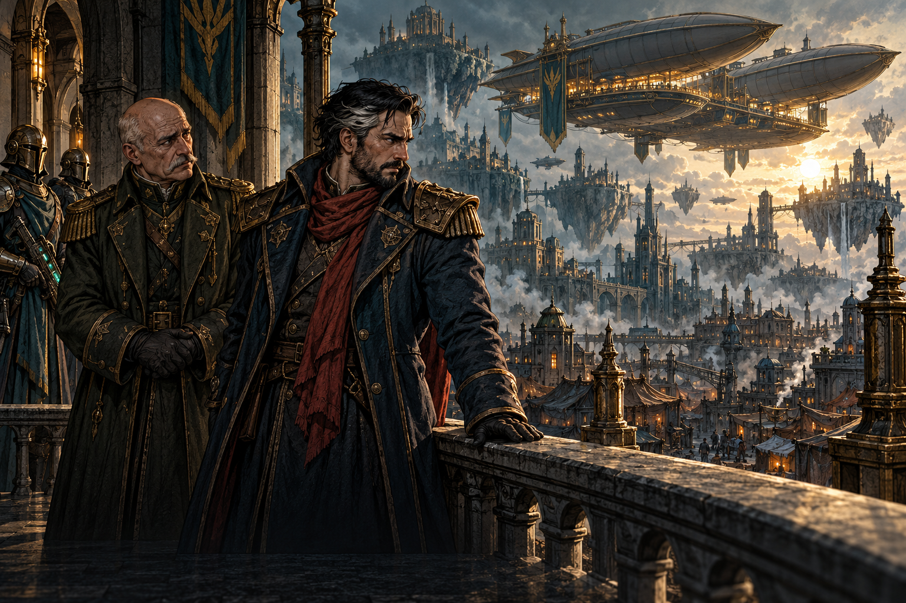
OTHER DUKES GREW RICH. HIS FLEET GREW SMALLER.
Rovan: “We bled keeping pirates from their mining ships. They traded. They grew. And now I cannot pay the soldiers who made it possible.”
Page 6: The Duke’s Due
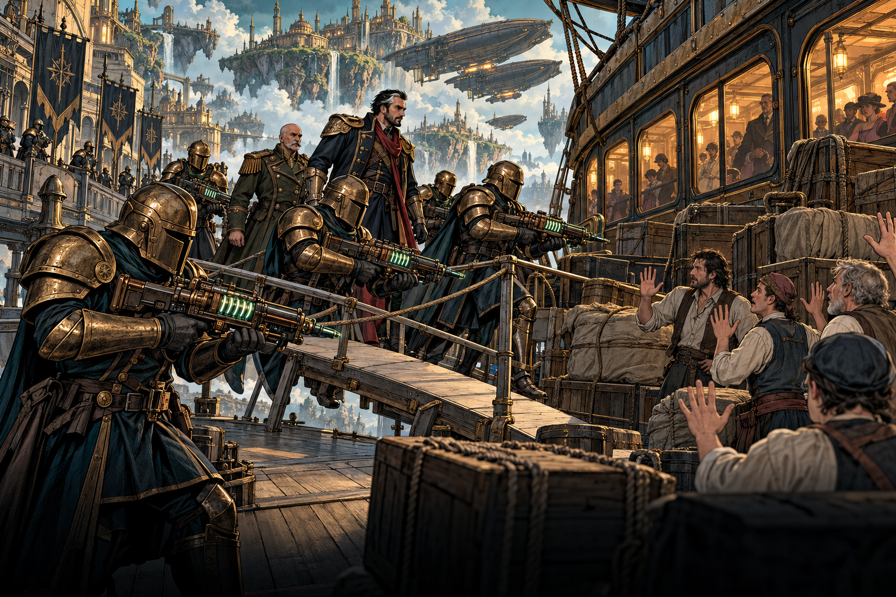
A CARAVAN FROM THE NEARBY DUCHY OF AURIC REACH.
Armoured soldiers board the trading ship. Charged Tesla guns hold the unarmed sailors at a standstill.
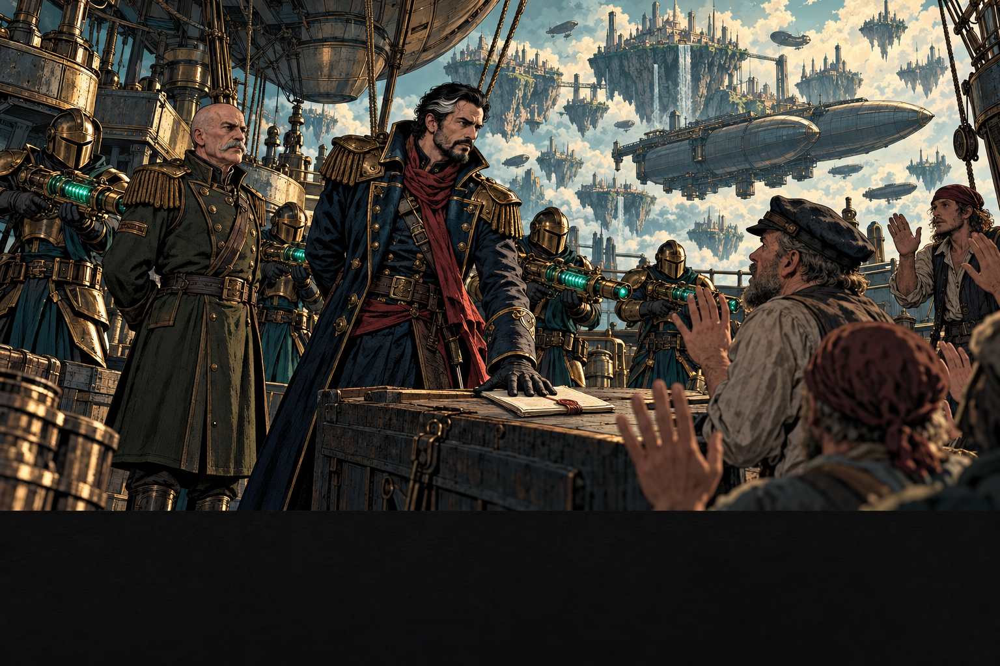
THE DUKE PRESENTS HIS CLAIM.
Rovan: “I seize this vessel of Auric Reach against the unpaid protection fees owed to my soldiers.”
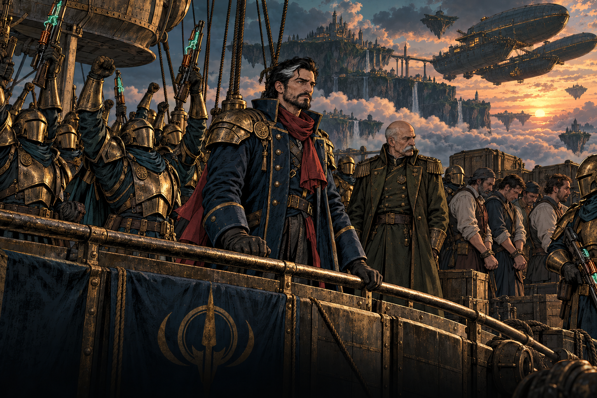
THE SOLDIERS ANSWER WITH A CHEER.
The cheers roll across the deck. The sailors remain silent. Grievous watches both sides.
Page 7: His Own Future
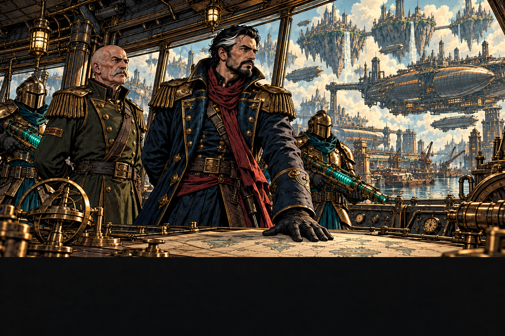
ROVAN WILL NO LONGER WAIT FOR ANOTHER DUKE’S PERMISSION.
Rovan: “I will define my own future. We sail for Auric Reach. I will take what is mine.”
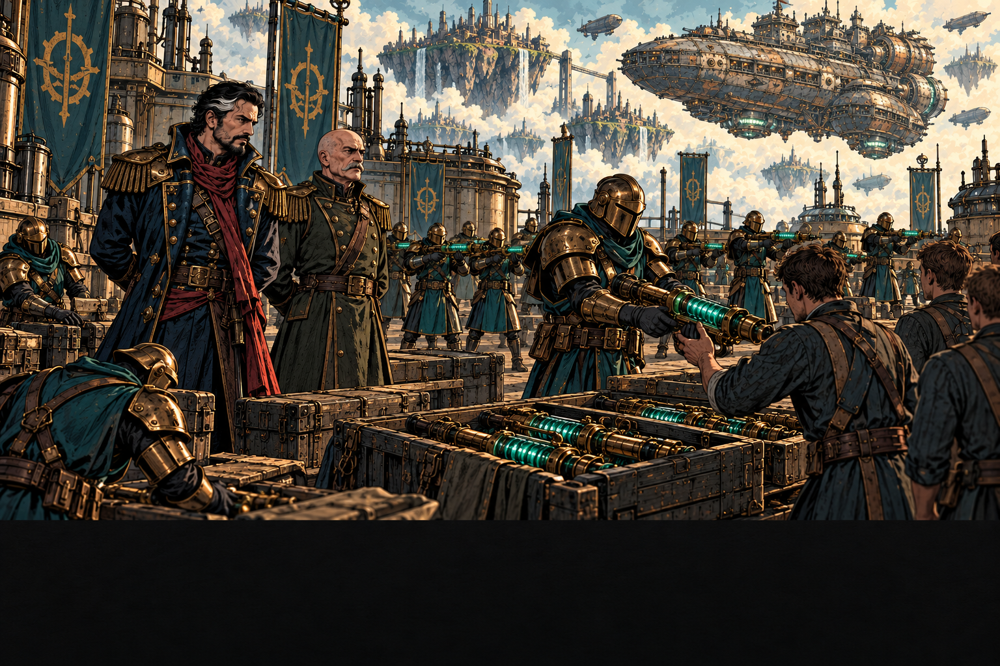
THE SEIZED RESOURCES BECOME PAY, EQUIPMENT, AND NEW RECRUITS.
His veterans are exceptionally well trained. Now they put that experience into drilling the new soldiers.

ONE CAPITAL SHIP. A SMALL FLEET. AN ARMY WITH PURPOSE.
Rovan takes his army toward Auric Reach. His fleet has only one capital ship: a Bastion.
Page 8: The First War
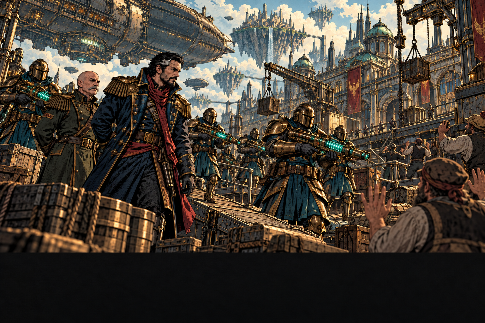
THE FIRST WAR BETWEEN DUCHIES SINCE THE FRACTURE.
They have fought pirates. They have never faced an organised invasion. Rovan strikes at one of Auric Reach’s barons.
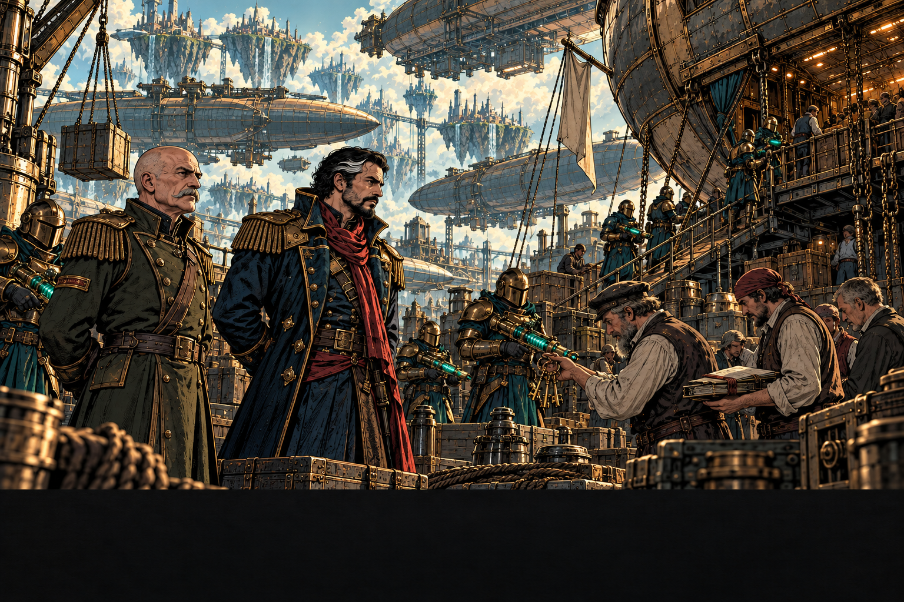
THE DOCKS FALL. THE SHIPS ARE SEIZED.
His veterans move with a discipline the defenders cannot match. The baron loses control of the harbour.
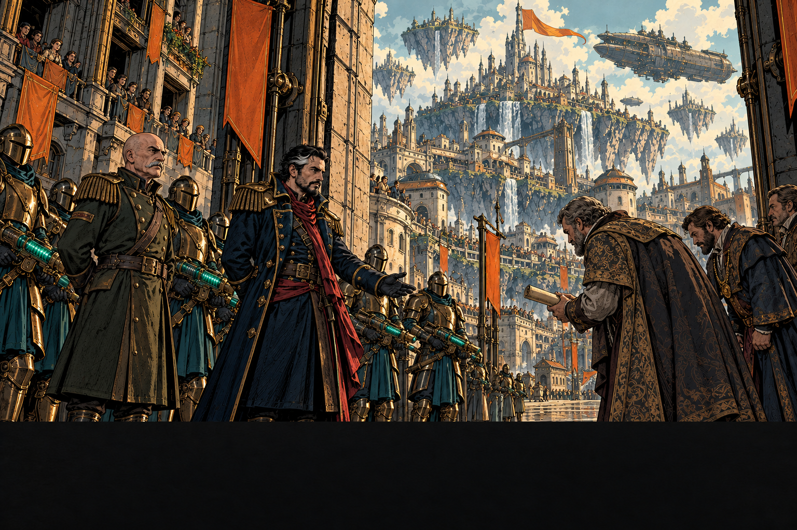
THEN THE CITY FALLS WITH SURPRISING EASE.
Superior training gives Rovan his victory. The captured city and ships become the foundation of his growing power.
Page 9: The Five
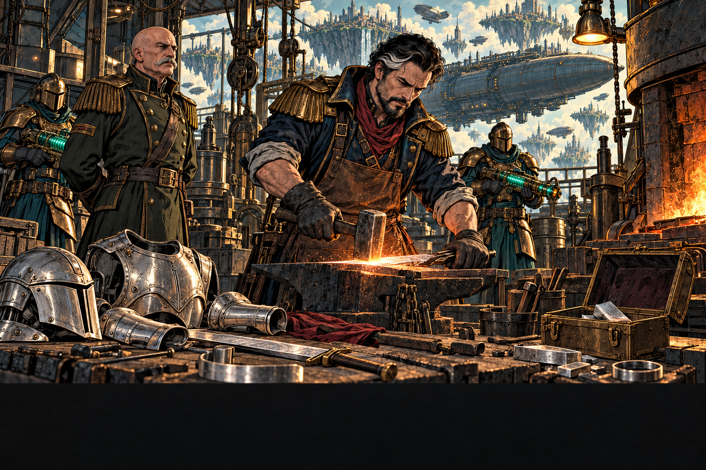
THE CARAVAN CARRIED SOMETHING RARER THAN WEALTH.
Silvery Type C Magneton. From his own experience, Rovan alone knows the secret of crafting it into armour and swords.
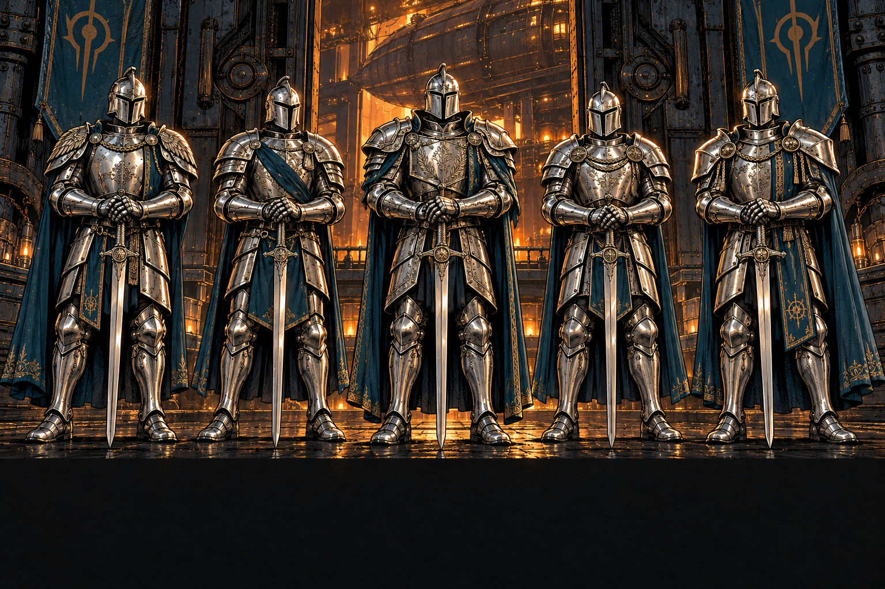
FIVE SUITS OF ARMOUR. FIVE SWORDS. NO METAL FOR A SIXTH SET.
He equips five members of his honour guard. Their silver Type C armour is impenetrable and impervious to weapons.
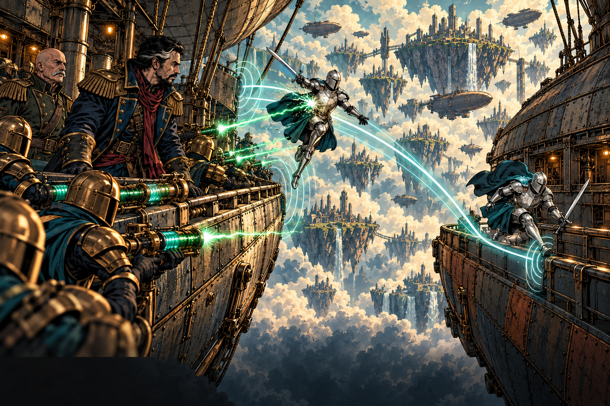
THE SILVER GUARD CAN DRIFT ALONG THE MAGNETIC FIELDS.
In their first trial, Tesla fire cannot pierce the silver. They drift from ship to ship across the void—an advantage no rival possesses.